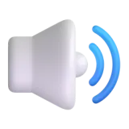
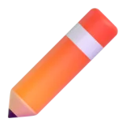
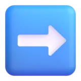

План на неделю: немецкий 15 минут в день
Слова в понедельник, диалог вслух, квиз в пятницу и разговор в субботу. Шаблон, который можно повторять каждую неделю, и две готовые недели.
- 7дней по 15 минут
- 2готовые недели
- 10вопросов в квизе


 340+ гайдов A0–C1
340+ гайдов A0–C1
7500+ слов с аудио офлайн в Notion
офлайн в Notion Goethe · telc · ÖSD
Goethe · telc · ÖSD доступ навсегда
доступ навсегда обновления бесплатно
обновления бесплатно
Собери свой план недели
Выбери дни и минуты: задания дня берутся из шаблона недели выше.
Дни недели
Минут в день
Твоя неделя
Выбери хотя бы один день.
Что взять для этого плана в Stellas
- 7500+ слов с аудиои транскрипцией: слова на понедельник
- 340+ гайдов A0–C1объяснение, видео, упражнение и ответы: тема на среду
- Фильмы, книги, подкастыпо уровням: что слушать в четверг
 Упражнения с ответамии объяснениями: проверка в пятницу
Упражнения с ответамии объяснениями: проверка в пятницу- Интервальные повторениякарточки слов возвращаются в нужный день: воскресенье
- Трекер привычек в Notionотмечаешь дни плана, работает офлайн
Как не бросить план
 01
01Одно время каждый день
Привяжи 15 минут к привычке: после завтрака или по дороге на работу.

02План на воскресенье
Вечером в воскресенье выбери тему недели и заполни шаблон: утром не нужно думать.

03Пропустил — не догоняй
Пропустил день — просто продолжай со следующего, без двойной нагрузки.

Планов больше, чем уроков?
Новая тетрадь, красивое расписание, видео «как учить язык» — а до самого немецкого руки не доходят. В Stellas трекер и календарь в Notion уже готовы, а темы стоят по порядку: открываешь и делаешь, а не планируешь.
Темы по порядку от A0 до C1. Прогресс по темам виден в Notion.
Подготовка к экзамену внутри
Если впереди экзамен, ритм тот же: в Stellas есть подготовка к Goethe, telc, DTZ и ÖSD. В платформе есть отдельный блок по экзаменам: формат, типичные ошибки, шаблоны писем и устной части.
- 120гайдов Goethe
- 89гайдов telc и DTZ
 60гайдов ÖSD
60гайдов ÖSD- 40пробных тестов с разбором
- Lesen
- Hören
- Schreiben
- Sprechen
«Мои ошибки» собирает вопросы, где ты ошибся. Повторяешь их перед экзаменом.
Что пишут ученики


Цена: один раз и навсегда
Один платёж, доступ навсегда, обновления бесплатно.

A0–A2
20 €Основа: от алфавита до уверенного A2.

B1–C1
20 €Для тех, кто уже на B1 и идёт к C1.
Бонус к A0–C1: раздел A0–A2 на украинском
- 340+ гайдов A0–C1
- 7500+ слов с аудио
- фильмы, книги, подкасты по уровням
- трекер и повторения в Notion
- обновления бесплатно
Частые вопросы
15 минут правда хватит?
Чтобы двигаться — да. Регулярность важнее объёма: 15 минут каждый день дают больше, чем два часа раз в неделю.
Что делать в субботу, если не с кем говорить?
Говори вслух сам с собой на тему недели, запиши голосовое или найди собеседника в приложении для языкового обмена.
Где брать темы на следующие недели?
Из учебника своего уровня или из платформы Stellas: там темы грамматики и лексики идут по порядку от A0 до C1.
Я пропустил несколько дней. Начинать заново?
Нет. Продолжай с того дня, где остановился. В воскресенье повтори всё, что успел за неделю.